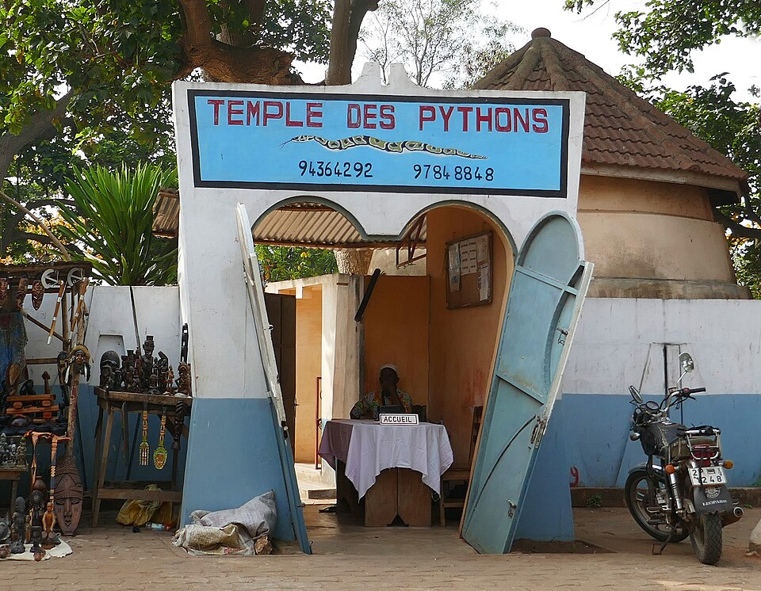
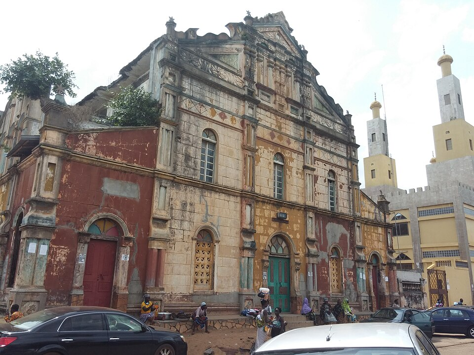

Abomey
Abomey était la capitale du royaume du Dahomey. Les palais royaux, construits par les rois successifs, sont inscrits au patrimoine mondial de l'UNESCO depuis 1985. Leurs bas-reliefs racontent l'histoire du royaume.
Des royaumes anciens, des lieux de mémoire et des traditions bien vivantes.
Abomey était la capitale du royaume du Dahomey. Les palais royaux, construits par les rois successifs, sont inscrits au patrimoine mondial de l'UNESCO depuis 1985. Leurs bas-reliefs racontent l'histoire du royaume.

Ouidah est une ville chargée de mémoire. La Route des Esclaves mène jusqu'à la plage et à la Porte du Non-Retour, dédiée aux millions de personnes déportées pendant la traite. On y visite aussi le Temple des Pythons.

La capitale officielle garde de nombreuses maisons de style afro-brésilien et une grande mosquée aux couleurs vives. C'est une ville calme, idéale pour se promener à pied.

Chaque année, le 10 janvier, le Bénin célèbre les religions traditionnelles. À Ouidah surtout, la journée est marquée par des danses, des tambours et des cérémonies qui attirent des visiteurs du monde entier.